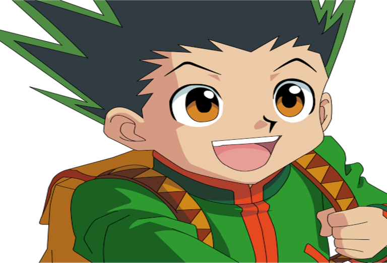
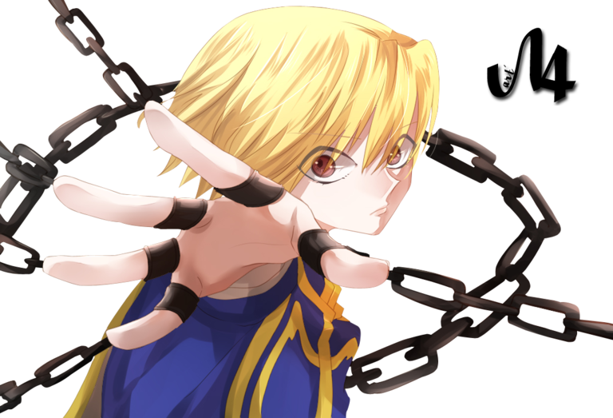
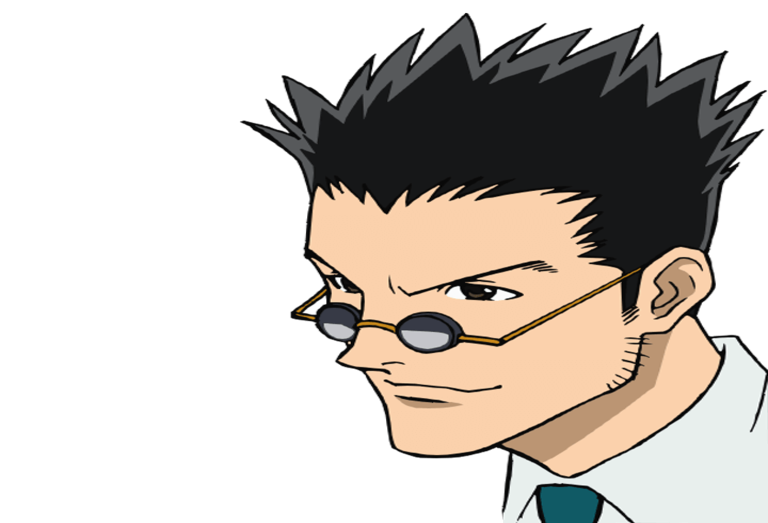
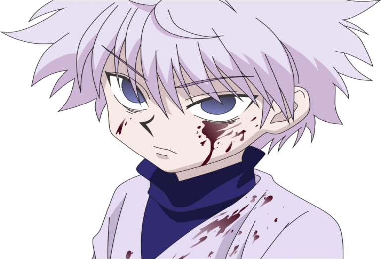
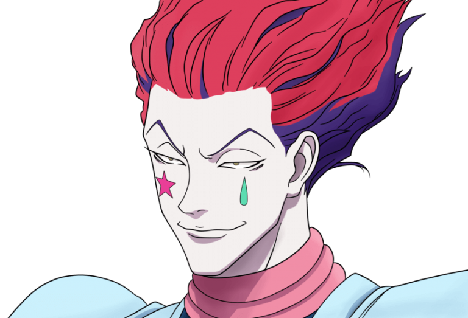
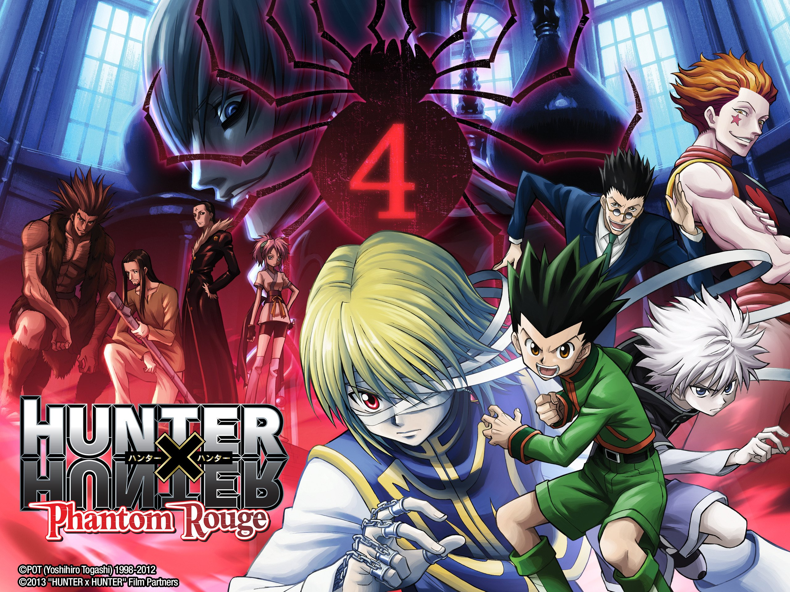
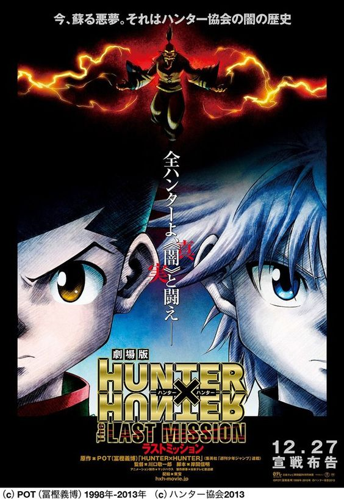

Resumen
Riquezas abundantes, tesoros escondidos, terroríficos monstruos y criaturas exóticas pueden encontrarse dispersos por todo el mundo... Gon parte en un viaje para convertirse en un cazador profesional que arriesgue su vida en busca de lo desconocido. En el camino conocerá a otros aspirantes a cazador como él: Kurapika, Leorio y Killua. ¿Podrá Gon superar los rigurosos requisitos del examen y convertirse en el mejor cazador del mundo? ¡Su épico viaje está por comenzar!
Personajes Principales
Gon Freecss
Protagonista de la serie de manga y anime. Está en búsqueda de su padre, el famoso cazador Ging Freecss.
Kurapika
Uno de los cuatro protagonistas principales de la serie Hunter x Hunter. Busca venganza por su sangriento pasado. Sus ojos brillan en un hermoso y codiciado escarlata al experimentar emociones intensas.
Leorio
Cazador novato y actualmente es estudiante de medicina, así como un miembro de los zodiacos con el nombre en clave "jabalí". Él es parte de la División de Ciencia, creada en preparación para el viaje al Continente Oscuro.
Killua Zoldyck
Es el co-protagonista y el mejor amigo de Gon Freecss. Es el tercero de los cinco hijos de la familia Zoldyck.
Hisoka
Cazador y antiguo miembro de la Brigada Fantasma. Él siempre está en busca de oponentes fuertes, y perdonará a los que tienen un gran potencial, como Gon y Killua para que sean lo suficientemente fuertes como para realmente desafiarlo. Fecha estreno: marzo de 2012
Películas
Hunter × Hunter: Phantom Rouge
Con una producción a cargo del estudio Madhouse y con la compañía japonesa Tōhō se encargó de su distribución. La historia se enfoca en los esfuerzos de Gon y sus amigos para recuperar los ojos escarlata de Kurapika, que fueron robados por Omokage, un miembro de Gen'ei Ryodan.
Hunter × Hunter: The Last Mission
La película se estrenó en los cines japoneses el 27 de diciembre de 2013. La historia se centra en Netero, el presidente de la Asociación de Cazadores, y de como Gon y sus amigos descubren los oscuros secretos de su pasado.